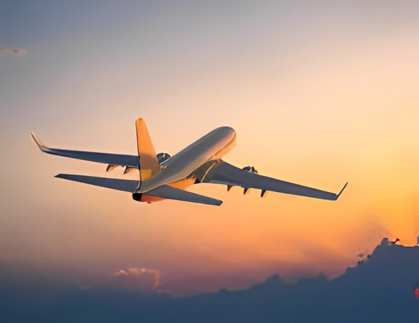
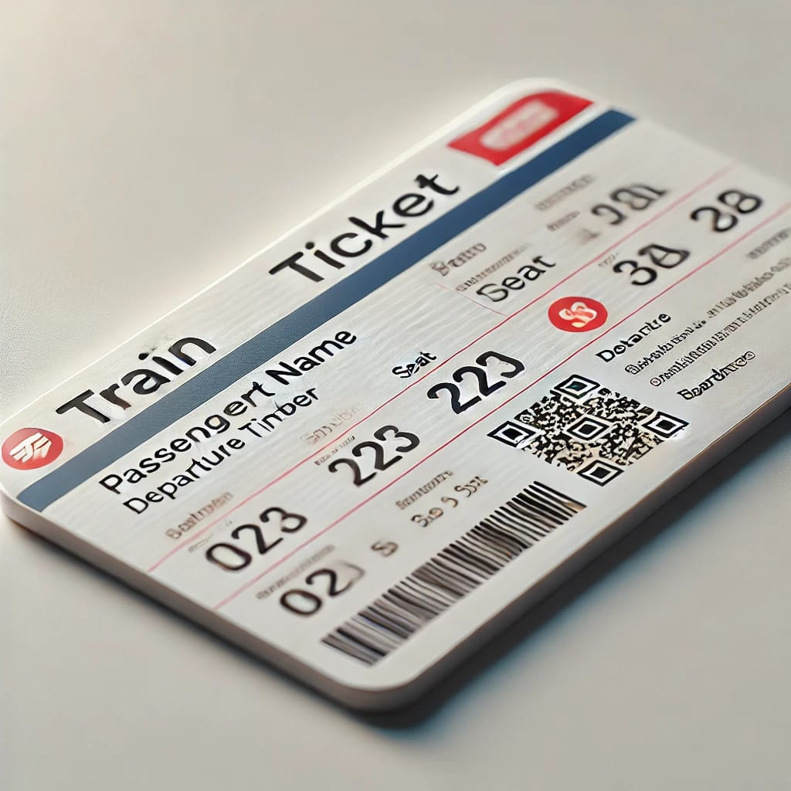
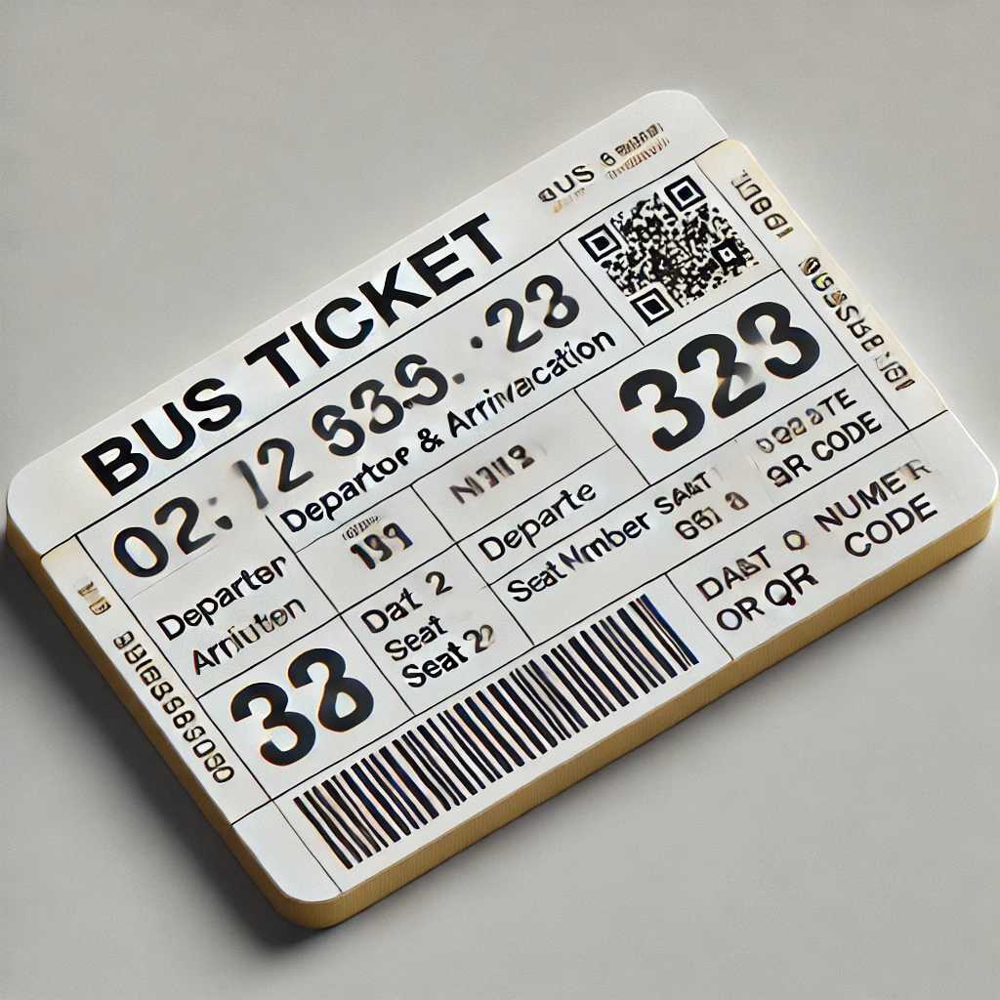
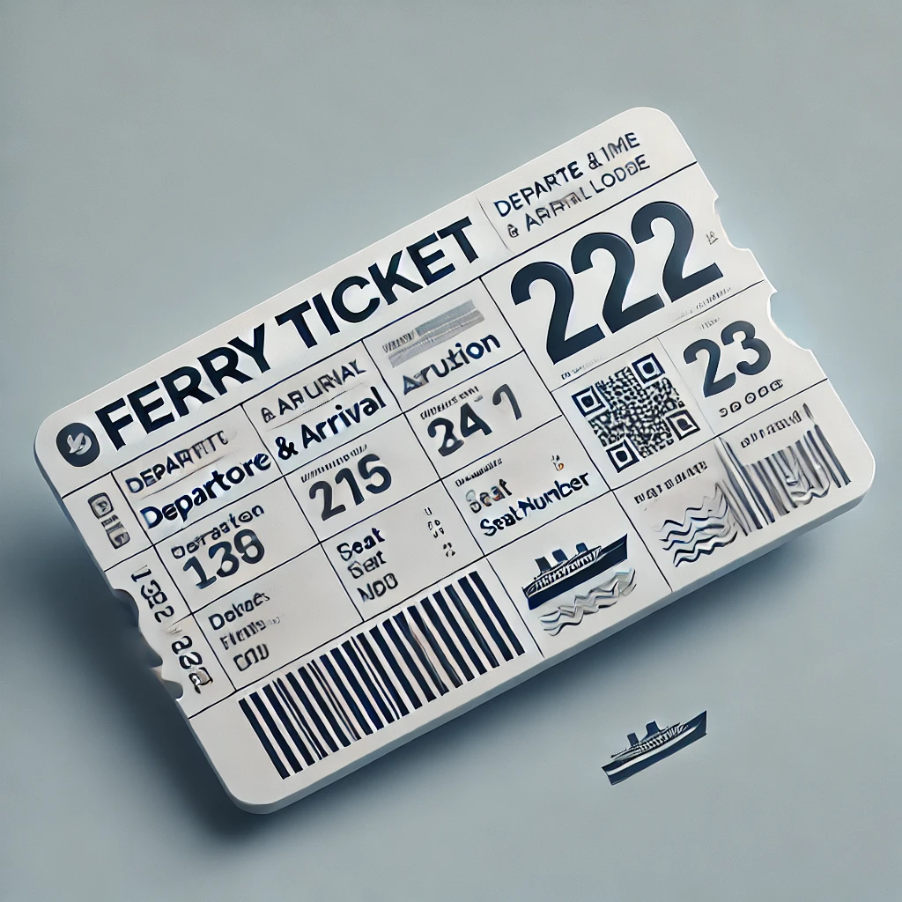
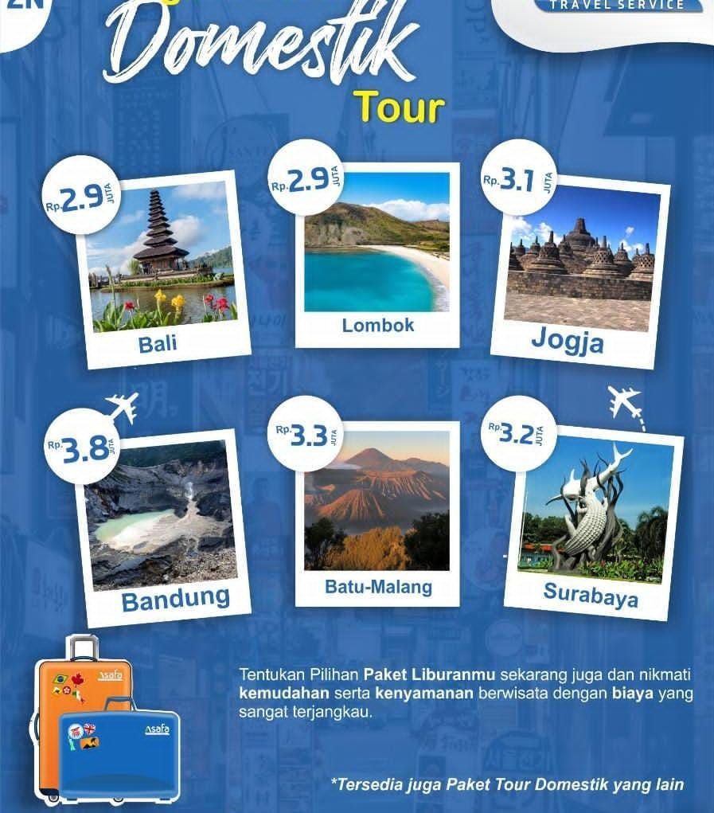
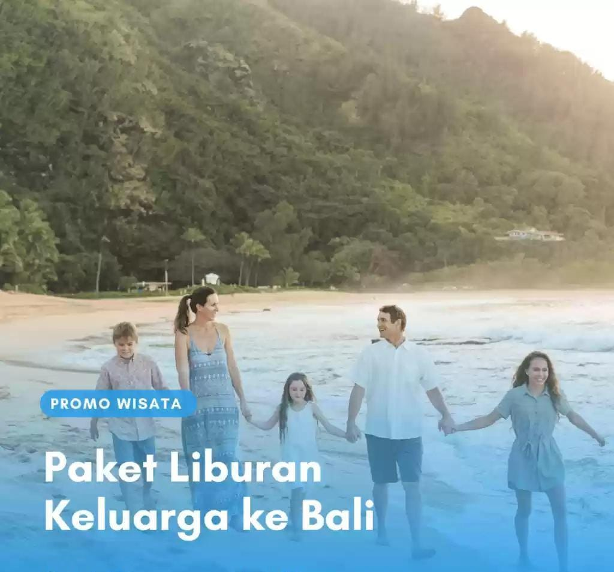
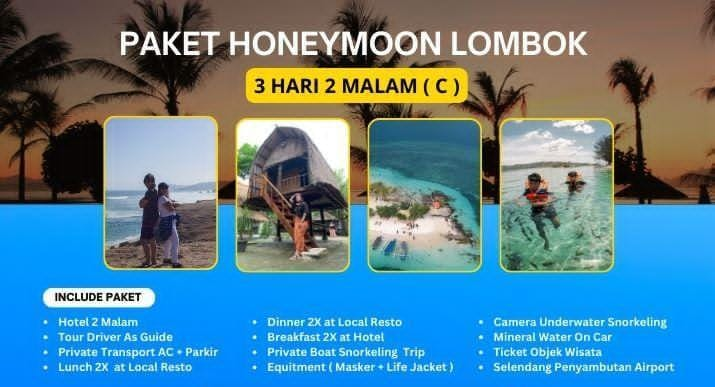
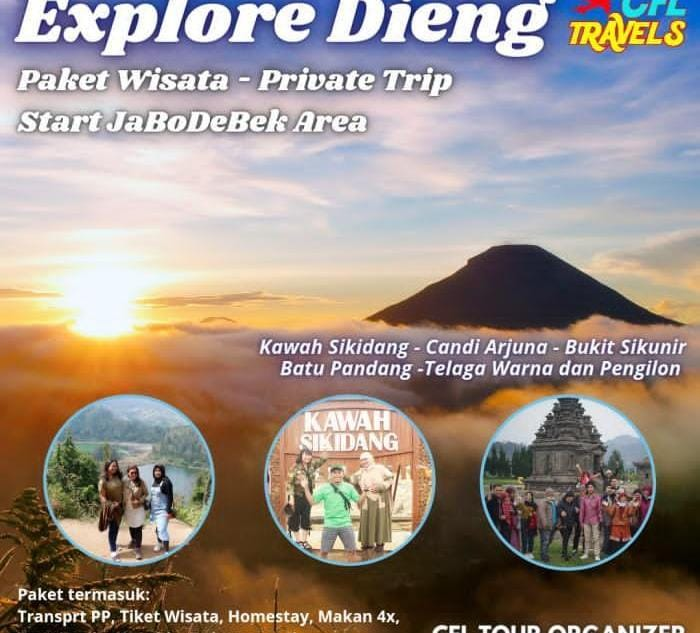
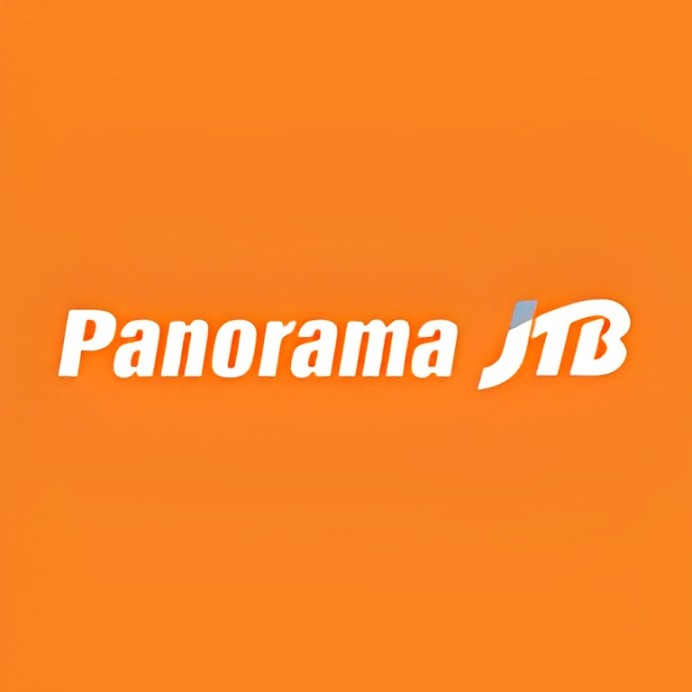

Visi
Menjadi pionir dalam menciptakan solusi digital yang inovatif dan berkelanjutan, memberdayakan bisnis untuk berkembang di era digital melalui desain yang menarik, teknologi terkini, dan pengalaman pengguna yang luar biasa
Nyaman Cepat Dan Aman Bersama Jelajah Kita
Menjadi pionir dalam menciptakan solusi digital yang inovatif dan berkelanjutan, memberdayakan bisnis untuk berkembang di era digital melalui desain yang menarik, teknologi terkini, dan pengalaman pengguna yang luar biasa
1. Meningkatkan Kualitas Layanan: Memberikan pelayanan yang profesional dan ramah untuk memastikan kepuasan pelanggan dalam setiap tahapan perjalanan.
2. Pengalaman Perjalanan yang Unik: Menyediakan paket perjalanan yang beragam dan inovatif, yang mampu menciptakan pengalaman tak terlupakan bagi pelanggan.3. Keberlanjutan dan Tanggung Jawab Sosial: Mendukung pariwisata yang bertanggung jawab secara lingkungan dan sosial, serta berkontribusi pada pengembangan ekonomi lokal di destinasi yang dikunjungi.
4. Teknologi dan Kemudahan: Menggunakan teknologi terkini untuk mempermudah pelanggan dalam merencanakan dan memesan perjalanan, serta memberikan informasi yang transparan dan akurat.5. Keamanan dan Kenyamanan: Menjamin keamanan, kenyamanan, dan kepuasan pelanggan selama perjalanan dengan menyediakan transportasi dan akomodasi yang berkualitas tinggi.
Kami menyediakan berbagai produk dan layanan
menyediakan tiket penerbangan domestik maupun internasional dari berbagai maskapai
2. Tiket Kereta Api
Menawarkan layanan pembelian tiket kereta api untuk perjalanan antarkota
3. Tiket Bus
Penyediaan tiket bus untuk perjalanan darat baik lokal, maupun antarprovinsi
4. Tiket Kapal
Untuk perjalanan laut, seperti antar pulau atau wisata kapal pesiar
1. Paket Wisata Dosmetik
Paket yang mencakup transportasi, akomodasi, dan tur wisata ke destinasi tertentu. Biasanya sudah termasuk pemandu wisata, transportasi lokal, dan tiket masuk tempat wisata.
2. Paket Wisata Keluarga
Dirancang khusus untuk keluarga dengan aktivitas yang ramah anak.
3. Paket HoneyMoon
Menawarkan pengalaman romantis bagi pasangan yang baru menikah, sering kali termasuk akomodasi mewah dan layanan spesial.
4. Open Trip And Private Trip
Open trip memungkinkan wisatawan bergabung dengan grup lain, sedangkan private trip menawarkan pengalaman tur pribadi yang lebih eksklusif
Berada di jalur utama Bandung-Lembang, Farm House menjadi objek wisata yang tidak pernah sepi pengunjung. Selain karena letaknya strategis, kawasan ini juga menghadirkan nuansa wisata khas Eropa. Semua itu diterapkan dalam bentuk spot swafoto Instagramable.
Perusahaan ini juga pernah bekerja sama dengan perusahaan travel lainnya yaitu
